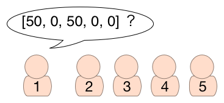
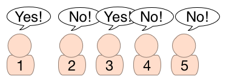
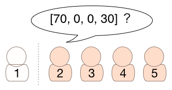
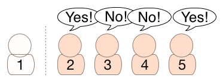
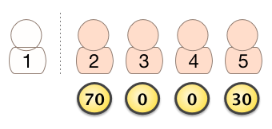

2014 年お正月。とある小学生に:
小学生 A: 「ねー、Google の面接試験で出るらしいこの問題、どうやって解くの？」
と聞かれました。
私: 「ほうほう、どんな問題？（あー、どうせまた "スクールバスにゴルフボールは何個入るでしょうか？" 的な問題かな。そんな問題実際出るわけないんだけどなー。最近、よく出すのは "ゴルフボールにスクールバスを入れる方法" だからな！）」
と、軽くかわそうと思いきや、小学生 A から出されたのは以下の問題でした。「海賊と金貨」問題と呼ばれているらしいです。
5 人の海賊がいて、彼らは 1 位から 5 位にまでランク分けされています。1 位の海賊 は 100 枚の金貨をどのように分けるかというプランを提案する権利があります。残り の海賊はこのプランに投票する権利があり、賛成が半分に満たない場合には 1 位の海 賊は殺されます。1 位の海賊の分け前を最大にしてなおかつ彼が生き残るにはどうすれ ばいいですか？（ヒント：一人の海賊は結局、金貨の 98％で終わる）
私:「意外にまともな問題だった。」
小学生 A:「ねー教えて。答えって本当にあるの？」
小学生 N:「ずっと考えていたんだけど、わかんなかったの。正月に聞こうと思ってた（わくわく）」
私: 「も、もちろん、解けるよー。ちょっと待ってなー。」
「大人なんだから、当然解けるよね？」的な眼差しで見つめられては、答えないわけにはいきません。さて...。問題の設定が若干曖昧なので、まずは設定を補完しましょう。
- 投票には、プランを提案する本人も含めて全員参加します。
- 投票の結果、賛成票が投票数の半数に満たなければ、プランの提案者はその場で殺されてしまいます。
- ランク 1 位の海賊が殺されたら、次は残された 4 人で同じことを繰り返します。次にプランを提案するのは、ランク 2 位の海賊です。
- 賛成票が半数以上になって分け前が決定するまで、この手続きは繰り返されます。
具体例です。最初に、ランク 1 位の海賊が「おれと海賊 3 は 50 枚ずつ。他のひとにはあげないよ」というプランを提案するとします。

それぞれプランに投票します。

賛成票は 2 票。5 人の半数以上である 3 票に満たなかったので、プランを提案した人は殺されてしまいます。
残された 4 人で同じことを行います。次に提案する権利があるのは、ランク 2 位の海賊です。


今度も賛成票は 2 票ですが、今回は 4 人の半数以上である２票ですので、プランは採用され、分け前が決定されます。

結果は、海賊 1 は死亡。海賊 2 は金貨 70 枚、海賊 5 は金貨 30 枚。海賊 3 と海賊 4 は金貨 0 枚ですが、幸いなことに命だけは助かっています。
さらに必要な設定として、それぞれの海賊は、以下のルールに従って行動するとします。
- 自分が生存することを最優先します。
- 生存できる場合は、得られる金貨の枚数を最大限にしようとします。
- プランに賛成しても反対しても、自分が得られる金貨の枚数が結局同じになるならば、プランに反対します。
- プランを提案するとき、採用されるプランが複数あるとします。その際、自分が得られる金貨の枚数が同じであるプランが複数あるならば、できるだけランクが下位の海賊に金貨を多く分配するプランを選択します。つまり、他の条件が同じであるかぎり、ランク 4 位の海賊よりもランク 5 位の海賊に多く金貨が渡るようなプランを提案します。
つまり、海賊は
(自分の命) >>> [超えられない壁] >>> (金貨) >>> [超えられない壁] >>> (ランクが 上の海賊の不幸は蜜の味)
という価値観に基いて行動します。...嫌なやつ。海賊は、自分以外の他の海賊も同様に「嫌なやつ」であるということを、お互いに知っています。
私: 「これは、あれだね。帰納法的に考えればいいんだね。」
小学生 A: 「キノーホー？」
私: 「（うっ...）つまり、まず海賊がひとりだけだった場合を考えてみると。この場合は、自分が金貨 100 枚ぜんぶゲットして終了。次に海賊が 2 人の場合を考えてみると、自分が賛成票をいれれば相手が反対しても、賛成半数とれるから、自分 100 枚・相手 0
枚の [100, 0] のプランで。次に海賊が 3 人の場合を考えてみると、えーと、必要な票数は 2 票だから、自分以外から 1 票取得できればいいわけで...。２人になったら、最後の人は一枚ももらえないから、最後の人に 1 枚だけあげれば、0 枚よりはましだから、賛成してくれるはず。つまり、[99, 0, 1] のプランで賛成 2 票とれる。次に 4
人の場合は....」
小学生 A: 「.... 」
...
私: 「... で、最後は、こうなるから、[98, 0, 1, 0, 1] のプランがベストだね。ランク 1 位の海賊は 98 枚とれるな。」
小学生 A: 「....わかんないよ。ほんと？ 」
私: 「うん、論理的に考えたら、そうなるはずだよ。」
小学生 A: 「ロンリテキ？たった 1 枚しかもらえないのに賛成するかなー？信じられないなー。」
小学生 N: 「うん。1 枚はちょっと少ない気がする。」
小学生 A: 「98 枚とか言ってきたら私絶対反対する！自己中すぎる！」
小学生 N: 「うん。98 枚っていえちゃうところがすごいよね。すごい自信。」
小学生 A: 「私だったら少なくとも 33 枚もらわないと、イヤっていっちゃうかな。」
小学生 N: 「えー。私は 20 枚でおっけーだよ。」
私: 「（きみたち、ぼくの話なんにもきいてないだろ）... 証明したる。」
もともとこの問題の意図するところは、頭の中だけで考えて答えを導き出すことだと思われます。しかし、ここは 生意気な 好奇心あふれる小学生たちに大人力を見せつけたいところです。
プログラミングの出番です。方針は簡単、可能なプランを全て生成します。そのなかから、ルールを満たす「ベスト」なプランをプログラムに選択させてみて、結果が頭の中で考えた結果と一致するかどうか確認してみることにしましょう。
例えば、海賊が 1 人の場合は、可能なプランは [100] とひとつだけです。
海賊が 2 人の場合は、可能なプランは以下の 101 通りになります。
[0, 100][1, 99][2, 98][3, 97]- ...
[99, 1][100, 0]
このうち、プランの提案者にとってもっとも有利なものは、自分が 100 枚取得できる
[100, 0] です。プログラムは、海賊が二人の場合は、[100, 0] を選択するはずです。
次に海賊が三人の場合は、可能なプランはぐっと増えます [1]。
[0, 0, 100][0, 1, 99][1, 0, 99][0, 2, 98][1, 1, 98][2, 0, 98]- ...
[99, 0, 1]- ...
[98, 2, 0][99, 1, 0][100, 0, 0]
このプランの中から、賛成票を 2 票取得できるもののうち、一番よいプランは、[99, 0, 1] になるはずです。プログラムがそれを選択してくれることを祈りましょう。以下、同様に、海賊の数が 5 人の場合まで繰り返します。
では、実際にやってみましょう。ここでは、Python を使用します。
#!/usr/bin/env python3
import sys
def generate_proposal(member, coin):
if member == 0:
yield [coin]
else:
for i in range(coin, -1, -1):
for proposal in generate_proposal(member - 1, coin - i):
yield [i] + proposal
def main(num_pirates, coin):
optimal_proposal = []
for member in range(num_pirates):
best_coin = -1
best_proposal = None
optimal_proposal.append(-1)
for proposal in generate_proposal(member, coin):
vote = sum(1 for i in range(member + 1) if proposal[i] > optimal_proposal[i])
if vote * 2 >= (member + 1) and proposal[-1] > best_coin:
best_coin = proposal[-1]
best_proposal = proposal
if best_proposal:
optimal_proposal = best_proposal
print(member + 1, optimal_proposal)
if __name__ == '__main__':
main(int(sys.argv[1]), int(sys.argv[2]))
実行します。海賊が 5 人,金貨が 100 枚の場合は以下のようになります。
% ./pirates.py 5 100
1 [100]
2 [0, 100]
3 [1, 0, 99]
4 [0, 1, 0, 99]
5 [1, 0, 1, 0, 98]
このプログラムは、これまでと異なり、プランを左右逆に出力することにご注意ください。つまり、一番右がランクの上位・一番先に提案する海賊の分け前を表し、一番左が最後の海賊の分け前を表します。
結果、海賊が 5 人の場合の金貨の分配は、 [1, 0, 1, 0, 98] となり、先ほど頭の中で解いた結果と一致します。ランク 1 位の提案者が金貨を 98 枚、3 番目と 5 番目の海賊が金貨が 1 枚、それ以外は 0 枚で決定します。
私: 「ダロ？一致しただろ？（ほっ）」
小学生 A: 「ほんとだー。ちょっと信じてあげれるかもー。」
私: 「（ちょっとかよ...）」
小学生 A: 「このプログラム間違ってないよね？だまそうとしてない？」
私: 「た、たぶん、あってると思うんだ..。」
小学生 N: 「ねえねえ。じゃあ、逆の場合は？海賊 100 人で金貨 5 枚だとどうなるの？」
私: 「（おー良い質問ではないか。おぬし、きっと大物になりよるぞ。にやにや）試してみようか。」
% ./pirates.py 100 5
1 [5]
2 [0, 5]
3 [1, 0, 4]
4 [0, 1, 0, 4]
5 [1, 0, 1, 0, 3]
6 [0, 1, 0, 1, 0, 3]
7 [1, 0, 1, 0, 1, 0, 2]
8 [0, 1, 0, 1, 0, 1, 0, 2]
9 [1, 0, 1, 0, 1, 0, 1, 0, 1]
10 [0, 1, 0, 1, 0, 1, 0, 1, 0, 1]
11 [1, 0, 1, 0, 1, 0, 1, 0, 1, 0, 0]
12 [0, 1, 0, 1, 0, 1, 0, 1, 0, 1, 0, 0]
13 [0, 1, 0, 1, 0, 1, 0, 1, 0, 1, 0, 0, -1]
14 [1, 0, 1, 0, 1, 0, 1, 0, 1, 0, 0, 0, 0, 0]
15 [1, 0, 1, 0, 1, 0, 1, 0, 1, 0, 0, 0, 0, 0, -1]
16 [1, 0, 1, 0, 1, 0, 1, 0, 1, 0, 0, 0, 0, 0, -1, -1]
17 [1, 0, 1, 0, 1, 0, 1, 0, 1, 0, 0, 0, 0, 0, -1, -1, -1]
18 [0, 1, 0, 1, 0, 1, 0, 1, 0, 1, 0, 0, 0, 0, 0, 0, 0, 0]
19 [0, 1, 0, 1, 0, 1, 0, 1, 0, 1, 0, 0, 0, 0, 0, 0, 0, 0, -1]
20 [0, 1, 0, 1, 0, 1, 0, 1, 0, 1, 0, 0, 0, 0, 0, 0, 0, 0, -1, -1]
21 [0, 1, 0, 1, 0, 1, 0, 1, 0, 1, 0, 0, 0, 0, 0, 0, 0, 0, -1, -1, -1]
22 [0, 1, 0, 1, 0, 1, 0, 1, 0, 1, 0, 0, 0, 0, 0, 0, 0, 0, -1, -1, -1, -1]
23 [0, 1, 0, 1, 0, 1, 0, 1, 0, 1, 0, 0, 0, 0, 0, 0, 0, 0, -1, -1, -1, -1, -1]
24 [0, 1, 0, 1, 0, 1, 0, 1, 0, 1, 0, 0, 0, 0, 0, 0, 0, 0, -1, -1, -1, -1, -1, -1]
25 [0, 1, 0, 1, 0, 1, 0, 1, 0, 1, 0, 0, 0, 0, 0, 0, 0, 0, -1, -1, -1, -1, -1, -1, -1]
26 [1, 0, 1, 0, 1, 0, 1, 0, 1, 0, 0, 0, 0, 0, 0, 0, 0, 0, 0, 0, 0, 0, 0, 0, 0, 0]
27 [1, 0, 1, 0, 1, 0, 1, 0, 1, 0, 0, 0, 0, 0, 0, 0, 0, 0, 0, 0, 0, 0, 0, 0, 0, 0, -1]
....
....
....
私: 「...」
小学生 A: 「...」
小学生 N: 「...」
小学生 A: 「遅いね...。」
小学生 N: 「うん。」
小学生 A: 「変なことしてパソコン壊したんじゃないの？」
私: 「いや、このプログラム、やっつけ仕事だったから、時間がかかるの（たらーん）。あ、-1 はその海賊が殺されちゃうって意味だからね。」
小学生 A: 「マイナス？」
私: 「（くっ...。）海賊が殺された時は、ばってん (x) にするね。結果を見やすくするために、ちょっと出力の仕方変更するね。ちょっと待ってて...。」
小学生 N: 「うん。」
...
私: 「おっけー。海賊 30 人に減らして、もう一度やってみるね。」
% ./pirates.py 30 5
1: 5
2: 05
3: 104
4: 0104
5: 10103
6: 010103
7: 1010102
8: 01010102
9: 101010101
10: 0101010101
11: 10101010100
12: 010101010100
13: 010101010100x
14: 10101010100000
15: 10101010100000x
16: 10101010100000xx
17: 10101010100000xxx
18: 010101010100000000
19: 010101010100000000x
20: 010101010100000000xx
21: 010101010100000000xxx
22: 010101010100000000xxxx
23: 010101010100000000xxxxx
24: 010101010100000000xxxxxx
25: 010101010100000000xxxxxxx
26: 10101010100000000000000000
27: 10101010100000000000000000x
28: 10101010100000000000000000xx
29: 10101010100000000000000000xxx
30: 10101010100000000000000000xxxx
小学生 N: 「海賊が 30 人のときは、４人死んじゃうの？」
私: 「そうだね。最初の 4 人はどんなにがんばっても半数以上の賛成を得られるプランがつくれないんだね。」
小学生 N: 「かわいそう。」
私: 「例えば、30 人のときは賛成票を自分以外で 14 票とらないといけないんだけど、29 人残った時のブランはえーと...」
29: 10101010100000000000000000xxx
私: 「...こうであることがわかっているので、どんなにうまく 5 枚の金貨を配分しても、14 票集めることができないんだね。例えば、金貨の配分を」
29: 10101010100000000000000000xxx
01010101010000000000000000000 (<- 金貨の配分)
私: 「...としても、賛成してくれる人は、8 人しかいないので、殺されちゃうんだなー。かわいそうだね。」
小学生 N: 「社会きびしいね。」
私: 「（お、おう）... しかし、これ面白いな..。なるほど。」
小学生 A: 「(突然) え、面白い？なになに？」
私: 「（きみ今アイカツ見てただろ...）いあ、パターンがあって...。いや何でもないです。これ、一般解 [2] とか求められそうだな。うん。」
小学生 A: 「パソコンってもっと早いのかと思ったけど、遅いんだー。海賊 100 人で金貨 1 万枚を奪い合う戦いを見たかったなー。」
私: 「（アイカツでも見てなさい...）ごめんなさい。パソコンは悪くない、僕が悪いんです...。早くしようと思えばできるんだけど...。」
小学生 N: 「早くできるの？私もみてみたいなー。」
私: 「うん、プランを全通り生成しているところはもっと早くできるよ [3]。でも、それよりはちゃんと論理的に解くのが一番だと思う。ちょっと待っててね。」
先ほど頭の中で解いた方法を今度はプログラムで再現してみましょう。以下のようになります。
#!/usr/bin/env python3
import sys
def main(num_pirates, coin):
def solve(proposal):
necessary_vote = len(proposal) // 2
ranks = sorted((n, i) for i, n in enumerate(proposal))
necessary_coin = sum(n + 1 for n, _ in ranks[:necessary_vote])
if coin >= necessary_coin:
return [(n + 1 if ranks.index((n, i)) < necessary_vote else 0)
for i, n in enumerate(proposal)] + [coin - necessary_coin]
return proposal + [-1]
def pretty(x):
if x == -1:
return 'x'
if x > 9:
return 'G'
return str(x)
optimal_proposal = []
for member in range(num_pirates):
optimal_proposal = solve(optimal_proposal)
print('{:4}: {}'.format(member + 1,
''.join(pretty(x) for x in optimal_proposal)))
if __name__ == '__main__':
main(int(sys.argv[1]), int(sys.argv[2]))
こちらだと、海賊 100 人、金貨 1 万枚の場合も時間をかけないで解くことが可能です。
例として、海賊 100 人、金貨 20 枚の場合の結果は以下のようになります。（見やすくするため、金貨が 10 枚以上のときは G にしています。）
1: G
2: 0G
3: 10G
4: 010G
5: 1010G
6: 01010G
7: 101010G
8: 0101010G
9: 10101010G
10: 010101010G
11: 1010101010G
12: 01010101010G
13: 101010101010G
14: 0101010101010G
15: 10101010101010G
16: 010101010101010G
17: 1010101010101010G
18: 01010101010101010G
19: 101010101010101010G
20: 0101010101010101010G
21: 10101010101010101010G
22: 010101010101010101010G
23: 10101010101010101010109
24: 010101010101010101010109
25: 1010101010101010101010108
26: 01010101010101010101010108
27: 101010101010101010101010107
28: 0101010101010101010101010107
29: 10101010101010101010101010106
30: 010101010101010101010101010106
31: 1010101010101010101010101010105
32: 01010101010101010101010101010105
33: 101010101010101010101010101010104
34: 0101010101010101010101010101010104
35: 10101010101010101010101010101010103
36: 010101010101010101010101010101010103
37: 1010101010101010101010101010101010102
38: 01010101010101010101010101010101010102
39: 101010101010101010101010101010101010101
40: 0101010101010101010101010101010101010101
41: 10101010101010101010101010101010101010100
42: 010101010101010101010101010101010101010100
43: 010101010101010101010101010101010101010100x
44: 10101010101010101010101010101010101010100000
45: 10101010101010101010101010101010101010100000x
46: 10101010101010101010101010101010101010100000xx
47: 10101010101010101010101010101010101010100000xxx
48: 010101010101010101010101010101010101010100000000
49: 010101010101010101010101010101010101010100000000x
50: 010101010101010101010101010101010101010100000000xx
51: 010101010101010101010101010101010101010100000000xxx
52: 010101010101010101010101010101010101010100000000xxxx
53: 010101010101010101010101010101010101010100000000xxxxx
54: 010101010101010101010101010101010101010100000000xxxxxx
55: 010101010101010101010101010101010101010100000000xxxxxxx
56: 10101010101010101010101010101010101010100000000000000000
57: 10101010101010101010101010101010101010100000000000000000x
58: 10101010101010101010101010101010101010100000000000000000xx
59: 10101010101010101010101010101010101010100000000000000000xxx
60: 10101010101010101010101010101010101010100000000000000000xxxx
61: 10101010101010101010101010101010101010100000000000000000xxxxx
62: 10101010101010101010101010101010101010100000000000000000xxxxxx
63: 10101010101010101010101010101010101010100000000000000000xxxxxxx
64: 10101010101010101010101010101010101010100000000000000000xxxxxxxx
65: 10101010101010101010101010101010101010100000000000000000xxxxxxxxx
66: 10101010101010101010101010101010101010100000000000000000xxxxxxxxxx
67: 10101010101010101010101010101010101010100000000000000000xxxxxxxxxxx
68: 10101010101010101010101010101010101010100000000000000000xxxxxxxxxxxx
69: 10101010101010101010101010101010101010100000000000000000xxxxxxxxxxxxx
70: 10101010101010101010101010101010101010100000000000000000xxxxxxxxxxxxxx
71: 10101010101010101010101010101010101010100000000000000000xxxxxxxxxxxxxxx
72: 010101010101010101010101010101010101010100000000000000000000000000000000
73: 010101010101010101010101010101010101010100000000000000000000000000000000x
74: 010101010101010101010101010101010101010100000000000000000000000000000000xx
75: 010101010101010101010101010101010101010100000000000000000000000000000000xxx
76: 010101010101010101010101010101010101010100000000000000000000000000000000xxxx
77: 010101010101010101010101010101010101010100000000000000000000000000000000xxxxx
78: 010101010101010101010101010101010101010100000000000000000000000000000000xxxxxx
79: 010101010101010101010101010101010101010100000000000000000000000000000000xxxxxxx
80: 010101010101010101010101010101010101010100000000000000000000000000000000xxxxxxxx
81: 010101010101010101010101010101010101010100000000000000000000000000000000xxxxxxxxx
82: 010101010101010101010101010101010101010100000000000000000000000000000000xxxxxxxxxx
83: 010101010101010101010101010101010101010100000000000000000000000000000000xxxxxxxxxxx
84: 010101010101010101010101010101010101010100000000000000000000000000000000xxxxxxxxxxxx
85: 010101010101010101010101010101010101010100000000000000000000000000000000xxxxxxxxxxxxx
86: 010101010101010101010101010101010101010100000000000000000000000000000000xxxxxxxxxxxxxx
87: 010101010101010101010101010101010101010100000000000000000000000000000000xxxxxxxxxxxxxxx
88: 010101010101010101010101010101010101010100000000000000000000000000000000xxxxxxxxxxxxxxxx
89: 010101010101010101010101010101010101010100000000000000000000000000000000xxxxxxxxxxxxxxxxx
90: 010101010101010101010101010101010101010100000000000000000000000000000000xxxxxxxxxxxxxxxxxx
91: 010101010101010101010101010101010101010100000000000000000000000000000000xxxxxxxxxxxxxxxxxxx
92: 010101010101010101010101010101010101010100000000000000000000000000000000xxxxxxxxxxxxxxxxxxxx
93: 010101010101010101010101010101010101010100000000000000000000000000000000xxxxxxxxxxxxxxxxxxxxx
94: 010101010101010101010101010101010101010100000000000000000000000000000000xxxxxxxxxxxxxxxxxxxxxx
95: 010101010101010101010101010101010101010100000000000000000000000000000000xxxxxxxxxxxxxxxxxxxxxxx
96: 010101010101010101010101010101010101010100000000000000000000000000000000xxxxxxxxxxxxxxxxxxxxxxxx
97: 010101010101010101010101010101010101010100000000000000000000000000000000xxxxxxxxxxxxxxxxxxxxxxxxx
98: 010101010101010101010101010101010101010100000000000000000000000000000000xxxxxxxxxxxxxxxxxxxxxxxxxx
99: 010101010101010101010101010101010101010100000000000000000000000000000000xxxxxxxxxxxxxxxxxxxxxxxxxxx
100: 010101010101010101010101010101010101010100000000000000000000000000000000xxxxxxxxxxxxxxxxxxxxxxxxxxxx
小学生 A: 「海賊がいっぱいいて、金貨の枚数がちょっとだったら、人がいっぱい死んじゃうだね。納得。」
私: 「（納得していいのか...) 試しに両方のプログラムの結果を比較してみるとだ...。うん、同じだな。」
小学生 N: 「どういうこと？」
私: 「最初に紙と鉛筆で説明したでしょ。あの考え方間違ってなかったってことかな？」
小学生 N: 「うん。不思議だったけどあっていたんだね。」
私: 「うん。よかった（ほっ）」
小学生 A: 「なんだ、やっぱり自信なかったんだ。」
私: 「（くっ。）」
...
(小学生 A と 小学生 N、何やら 2 人で相談しはじめる)
...
小学生 A: 「...ところで。」
私: 「なに？」
小学生 A: 「お年玉は何枚くれるの？」
小学生 N: 「枚数が少なかったら反対しちゃうぞ ♡」
私: 「(ちょ。ぼく、ころさないでよ) ... 」
footnotes:
- [1]: 海賊 3 人の場合は、
Combination(102, 2) = 5,151通りです。4 人の場合は、Combination(103, 3) = 176,851通り、5 人の場合は、Combination(104, 4) = 4,598,126通りです。 - [2]: 海賊の人数を
n, 自分のランクをi, 金貨の枚数をcとした場合、得られる金貨の枚数の一般解f(n, i, c)を式で表すことが可能です。 - [3]: Branch and bound すること（枝刈り) で大幅に生成されるプランの数を減らすことが可能です。